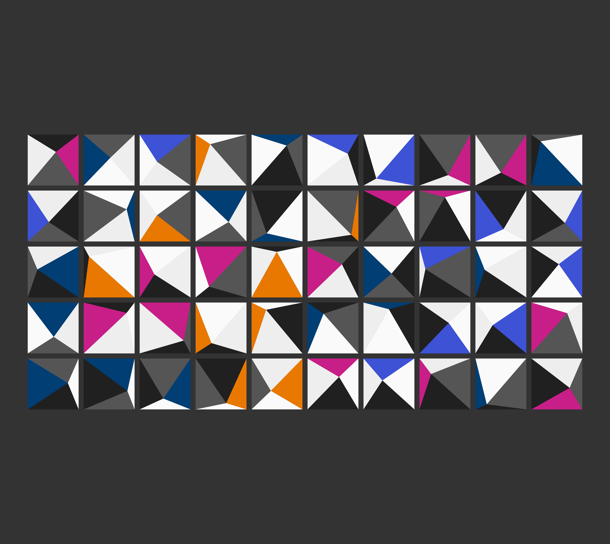

Zak Varty
Teaching
Research
Talks
Blog
Blog
Time to reality check the promists of machine learning-powered precision medicine
Reading summary of Wilkinson et al. (2020)
2024-11-04
Zak Varty

Steal like a generative artist
A first forray into generative art.
2024-10-01
Zak Varty
Method of Moments Estimation for Randomised Response Surveys
Method of moments estimation for common data models and randomised response designs.
2023-11-09
Zak Varty
Notably Inaccessible
A data driven investigation into the (in)accessibility of data science notebooks.
2023-10-03
Zak Varty
Bib but Better
Templates for all the bib entries you never knew you needed.
2023-09-13
Zak Varty
Why is My Classifier Discrimanatory?
A fresh view on understanding and addressing unfairness in classification (and regression) models.
2023-08-17
Zak Varty
How to Improve Your Relationship with Your Future Self
Reproducible workflows are not just good for science.
2023-08-15
Zak Varty
Overcoming Barriers to Sharing Code
Talk summary from the Toronto Workshop on Reproducibility in February 2023.
2023-08-08
Zak Varty
The Mundanity of Excellence
Exceptional performance is acheived by doing the small, boring stuff really well.
2023-07-26
Zak Varty
Counting the Countless
Is data science compatible with queerness?
2023-07-14
Zak Varty
Packaging your R code
A tutorial to guide you as you make your first (or hundredth) minimal R package.
2023-01-19
Zak Varty
Data Wrangling
Get your data ducks in a line using base R and the tidyverse.
2023-01-06
Zak Varty
Aquiring Data via an API
Part 2 of a mini-series on aquiring data from the web, focusing on data aquisition via APIs.
2022-12-14
Zak Varty
Git: putting your new feature out into the world.
A git workflow to put a local feature out in the wild, then tidy up after yourself.
2022-12-13
Zak Varty
Web Scraping with
{rvest}
Part 1 of a mini-series on aquiring data from the web, focusing on scraping webpages using the {rvest} package.
2022-12-01
Zak Varty
Good Enough Practices in Scientific Computing
Reading Summary of Wilson et al. (2017).
2022-10-19
Zak Varty
Data Journalism: Recreating a Professional Plot
Recreating a plot of record breaking temperatures by the BBC data journalism team.
2022-10-15
Zak Varty
Tidy Tuesday: Ravelry Yarn
Tidy Tuesday 2022 || Week 41
2022-10-12
Zak Varty
Recommended Statistics Books
Book recommendations for those looking to reinforce their knowledge of undergraduate and advanced statistics.
2022-10-10
Zak Varty
Writing a rhetorical précis
Structured summaries to remember and retrieve what you read
2022-10-07
Zak Varty
Setting up a quarto blog
Adding a blog
within
a quarto website
2022-09-26
Zak Varty
Hello, World!
A minimal first post
2022-09-26
Zak Varty
No matching items